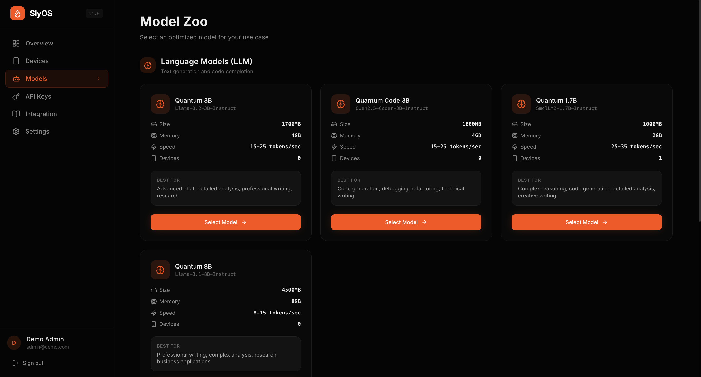

SlyOS provides the complete toolchain to deploy any Language Models (LMs) to your users' devices. Zero latency. 100% Privacy. No per-token fees.
Running `quantum-360m` entirely in the browser via WebGPU.

The fastest pipeline from raw weights to on-device intelligence.
Login to the SlyOS console and initialize your secure workspace.
Choose from our optimized Zoo or pull any model from Hugging Face.
Upload data to the RAG DB so the LM knows exactly what to talk about.
Tune quantization levels and set your hardware routing logic.
Grab your API key, drop the SDK into your app, and go live.
// 1. Initialize the edge agent const agent = await SlyOS.init("quantum-360m"); // 2. Sync your RAG context await agent.sync("https://slyos.db/your-project-id"); // 3. Query with zero latency const result = await agent.ask("Initialize diagnostic run.");
Shift from "Margin Destruction" to sustainable scaling.
Stop the variable "Cloud Burn." Replace unpredictable $1.50/user variable costs with a fixed $0.15/device fee. By moving inference to the edge, you slash infrastructure bills by up to 90%.
Scaling your testing shouldn't break your bank. Because edge pricing is fixed per device, your gross margins remain at a healthy 93.3% to 94.4% regardless of how many tokens your users (or your QA team) generate.
Route to cloud only when it makes sense. Use the Hybrid RAG model to keep 90% of interactions local for privacy and speed, while utilizing cloud-based Vector DBs only for complex retrievals—maintaining high-fidelity responses without the GPT-4o-mini price tag.
If you are building a consumer app with a chatbot, Cloud API costs scale linearly with your success. With SlyOS, your costs are flat, no matter how much your users chat.
Users can chat for hours without costing you a dime in server bills.
Build a chatbot locally with one copy and paste terminal command.
When latency is zero and privacy is absolute, new product categories emerge.
Optimized weights for instant edge deployment.
Ultra-lightweight reasoning engine optimized for mobile NPU architectures.
Drop your .onnx, .tflite, or .gguf files here to quantize for the edge.
Paste any repository URL. We'll handle the sharding, pruning, and deployment routing.
Track latency, memory pressure, and model performance across every device in your fleet. Real-time telemetry without seeing user data.
| Device UUID | Environment | Model Loaded | VRAM Usage | Inference Speed | Status |
|---|---|---|---|---|---|
| dev-8a92-f3... | Chrome / WebGPU | quantum-360m | 412MB / 8GB | 52 t/s | ONLINE |
| dev-b211-a9... | iOS 17.2 | voicecore-base | 256MB / 6GB | 0.3x RT | ONLINE |
| dev-c440-e1... | Android 14 | quantum-135m | 180MB / 12GB | 18 t/s | IDLE |
| dev-f999-z0... | Mac / Metal | quantum-8b | 5.2GB / 32GB | 88 t/s | ONLINE |
SlyOS isn't just for phones. It's an infrastructure layer that adapts to the available compute environment.
The standard SlyOS flow. A user's single device downloads an optimized SLM (e.g., 360M params) and runs it completely independently.
Leverage idle office compute. For latency-independent tasks, SlyOS splits a large model (e.g., 8B) across available workstations over the local 1GbE LAN.
No complex Python environments. No server management. Just a 3-step pipeline: upload data into a rag db so the LM knows what to talk about.
Predictable pricing built for high-volume deployment.